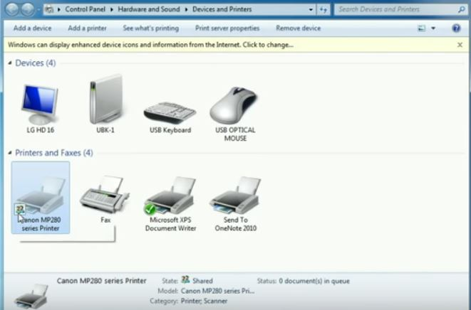

Di Posting Oleh Arif Rahman

Introduce my self!
Review weekly belajar di hacktiv8
Saya adalah student hacktiv8 batch 39 Majestic fox. Background pendidikan saya adalah Sistem Informasi. Meskipun latar belakang saya IT, tapi saya sadar, ilmu yang saya dapatkan ...
Baca selengkapnya→
Di Posting Oleh Arif Rahman
Tutorial Membuat Header
Sesuai dengan tema nya, kali ini saya akan menjawab keresahan dan kegelisahan teman teman blogger yang gak bisa mengoperasikan aplikasi editing seperti adobe photoshop & coreldraw alias gaptek hihihi untuk membuat header blog yang minimalis keren ...
Baca selengkapnya→
Di Posting Oleh Arif Rahman

Cara Menggunakan Satu Printer untuk Dipakai Bersama dalam Jaringan - Sharing Printer
kali ini saya ingin share bagaimana caranya menggunakan satu printer untuk dipakai bersama dalam sebuah jaringan/printer sharing, dalam artian misalnya dalam sebuah ruangan atau ruang kerja memiliki sebuah printer dengan beberapa komputer,...
Baca selengkapnya di blog pribadi saya→